Six pièces du studio Ludovic Roth quittent les galeries et prennent leurs quartiers d'été
au bord de l'eau. Le péage est à 2 €, le design n'a pas de prix.
01
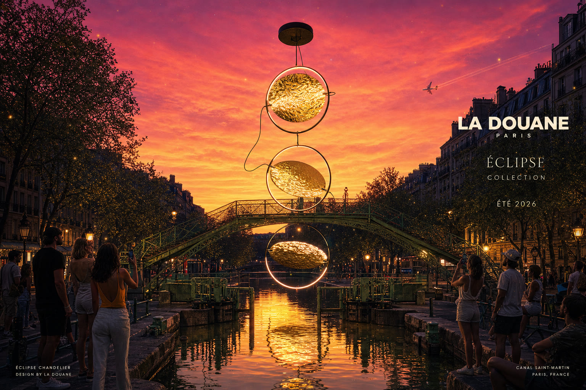
Trois Lunes sur le Canal
Éclipse — lustre, or martelé
L'éclairage public a été remplacé sans autorisation dans la nuit du 14 juillet. La mairie n'a jamais porté plainte.
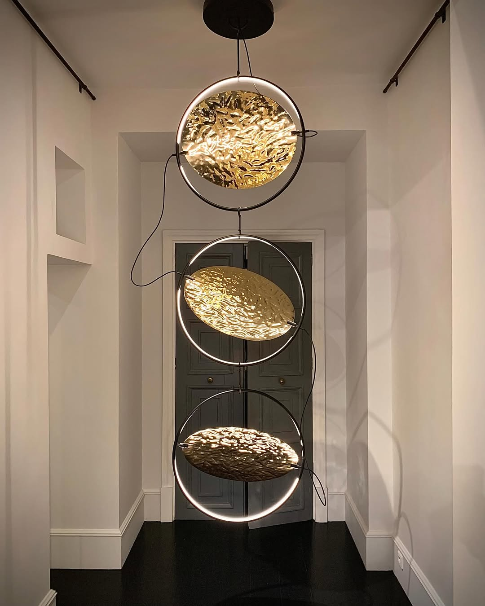
La pièce originale
02
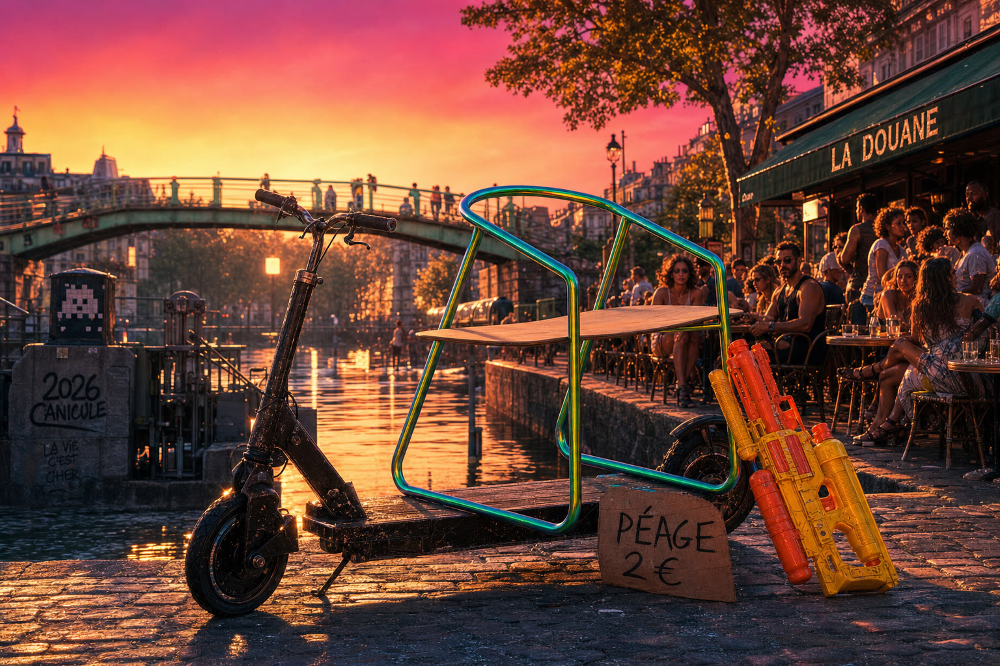
Le Trône du Douanier
Colorplane — chaise, acier iridescent & chêne
Fini la chaise de brasserie sanglée sur la trottinette. Le poste de douane passe en classe affaires. 2 € le passage, toujours.
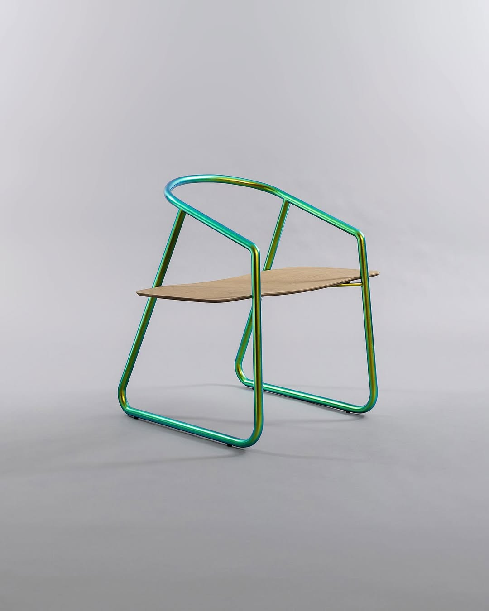
La pièce originale
03
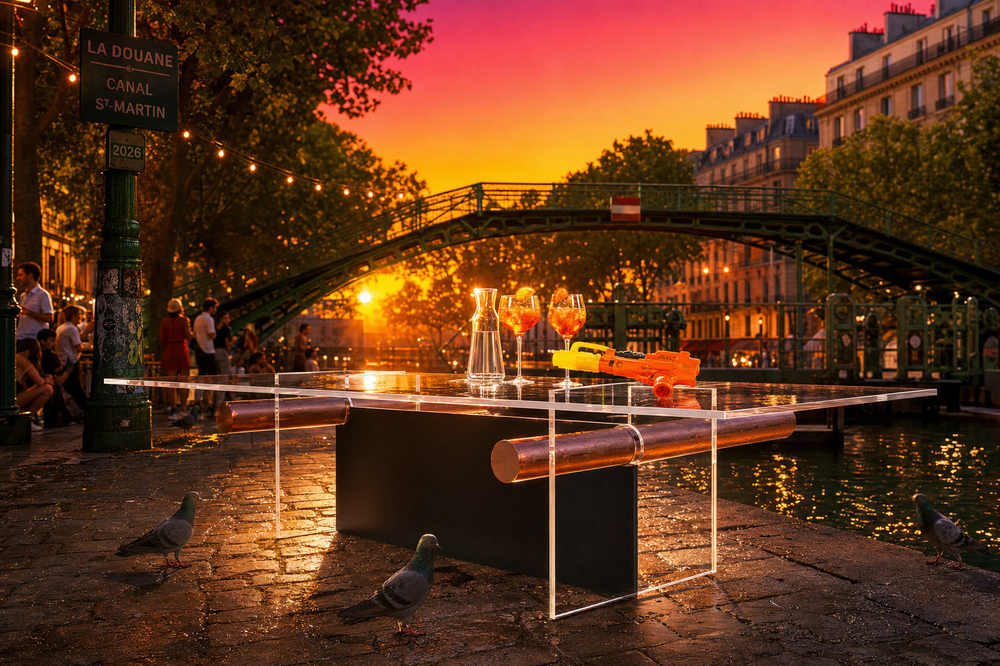
L'Apéro du Péage
Apollo — table, acrylique & cuivre
Dressée au milieu du quai : spritz réglementaire, carafe fraîche et Super Soaker de service. Les pigeons ont réservé.
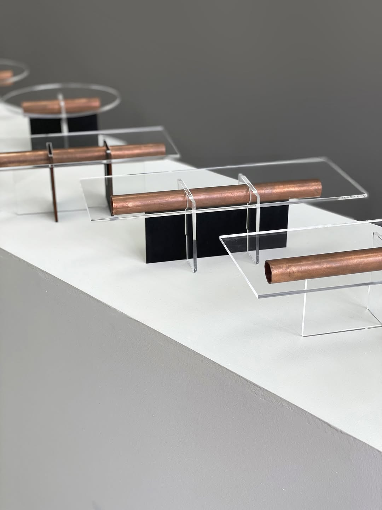
La pièce originale (maquettes 1:10)
04
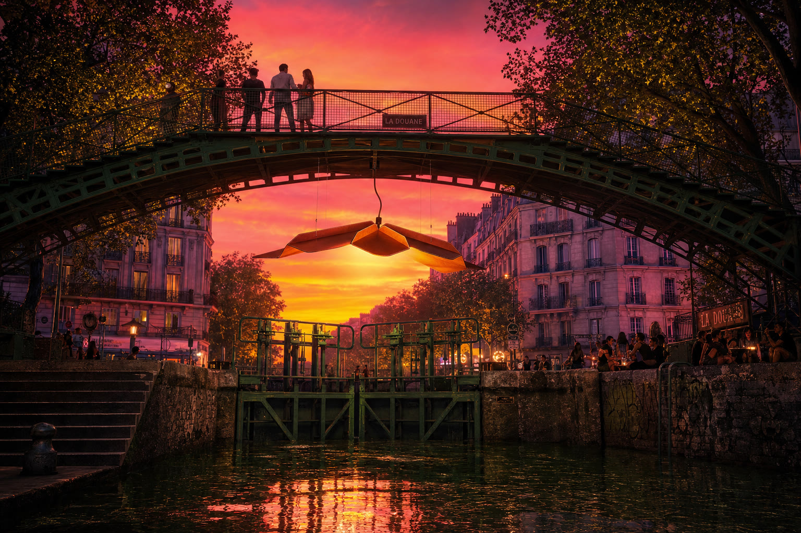
La Lanterne de l'Écluse
Cosse — suspension, cuir cognac
Suspendue à la passerelle, elle veille sur les baignades interdites et les serments d'été. Cuir pleine fleur, canicule pleine lune.
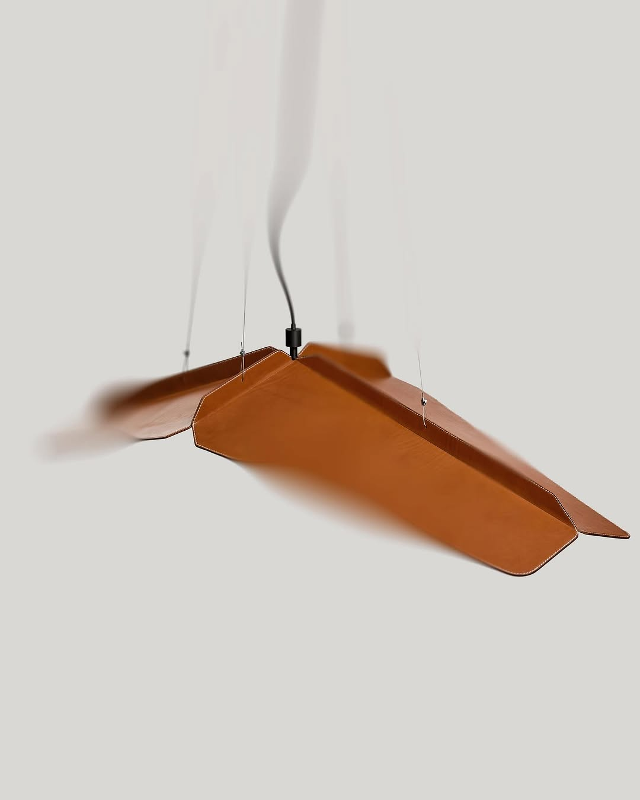
La pièce originale
05
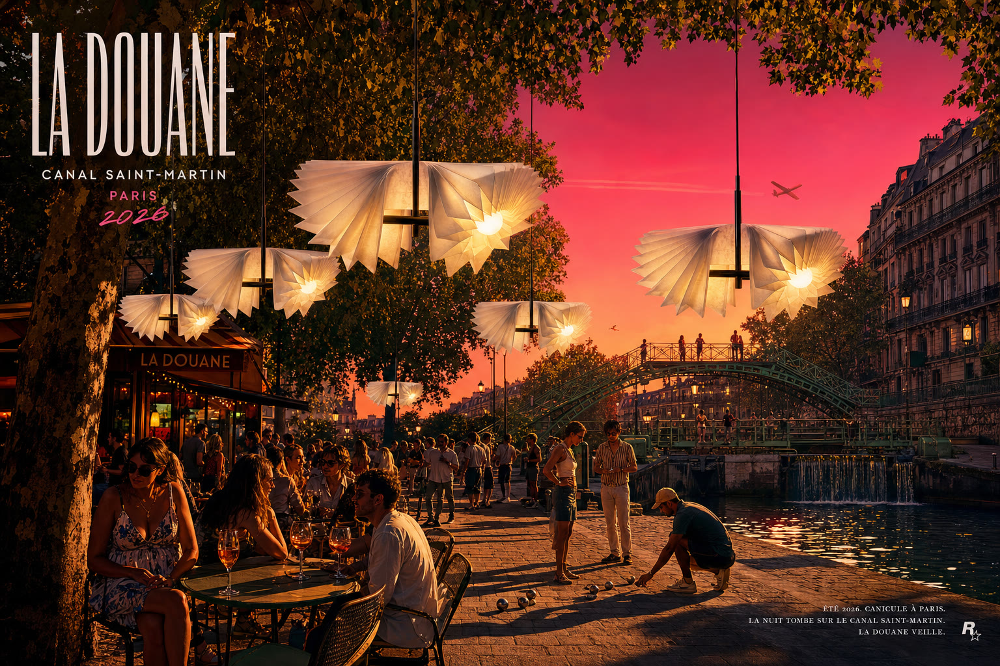
La Guinguette de la Canicule
IKO — suspension, papier plié
Quarante degrés à l'ombre des platanes, et du papier plié qui fait de la lumière fraîche. La pétanque s'est arrêtée pour regarder.
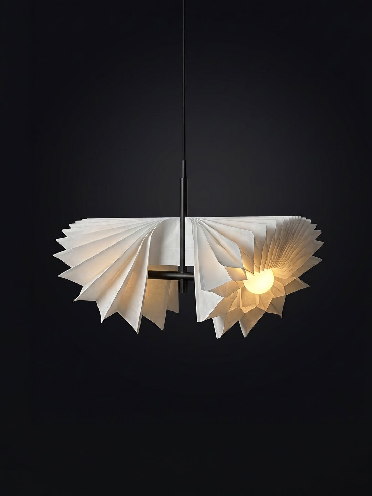
La pièce originale
06
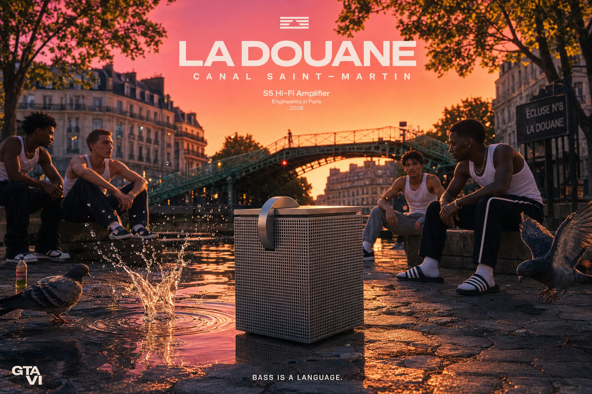
Bass is a Language
S5 — amplificateur hi-fi, aluminium perforé
Le boombox officiel du quai. Dédicace à 2 €, silence hors de prix. Les pigeons connaissent les paroles.